この美しい世界を楽しむために 生まれてきた、すべての人へ。
Kids Club星の子
「やってみたい！」が
叶う場所。
- 自分で
選ぶ。 - 自分で
決める。 - やって
みる。 - 夢中に
なる。
好奇心の種をまく。
心が動く体験を！
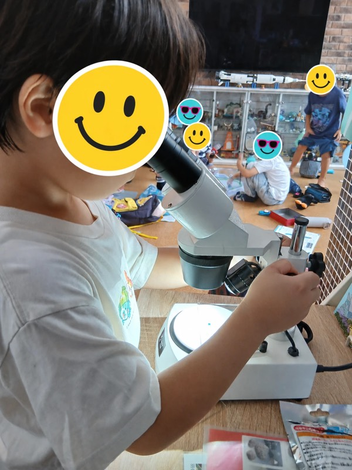
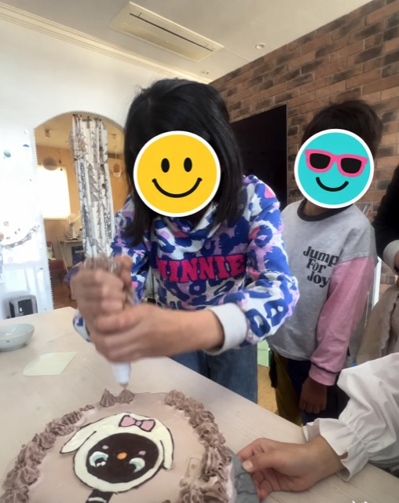
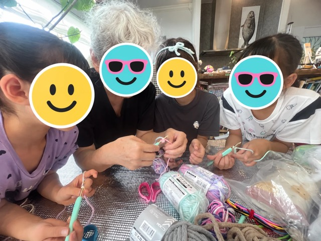
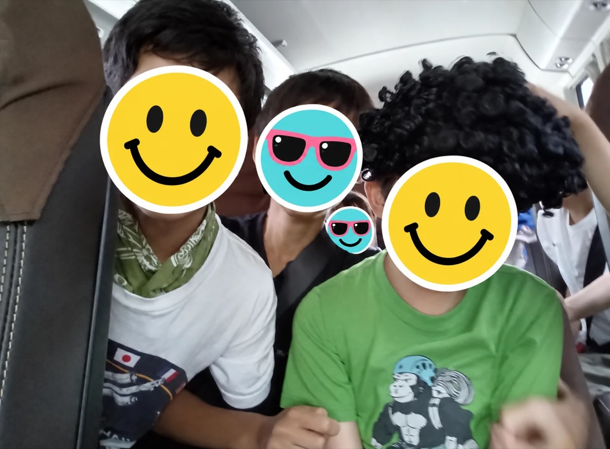
いっぱい遊ぼう。
やってみよう。
夢中になろう。
What we do星の子でできること
- 科学実験や工作
- アート折り紙・絵・絵本作り
- 自然外遊び・虫・植物
- 料理パン作り・夢のごはん
- 遠足ピクニック・おでかけ
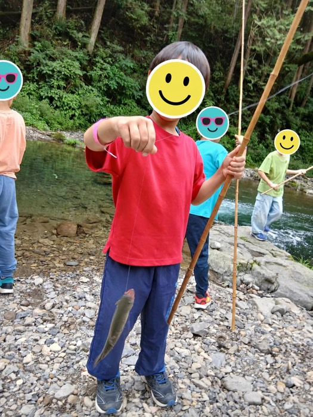
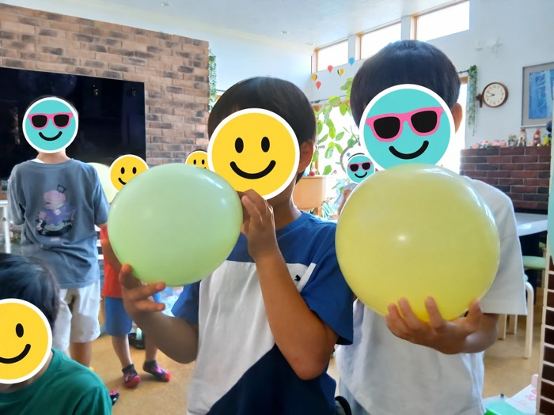
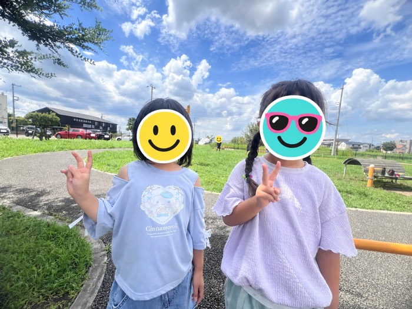
One day星の子の1日
- ただいま
- おやつ
- 今日は
なにする？ - 遊ぶ・つくる・
夢中になる - お迎え
今日も最高に楽しかった！
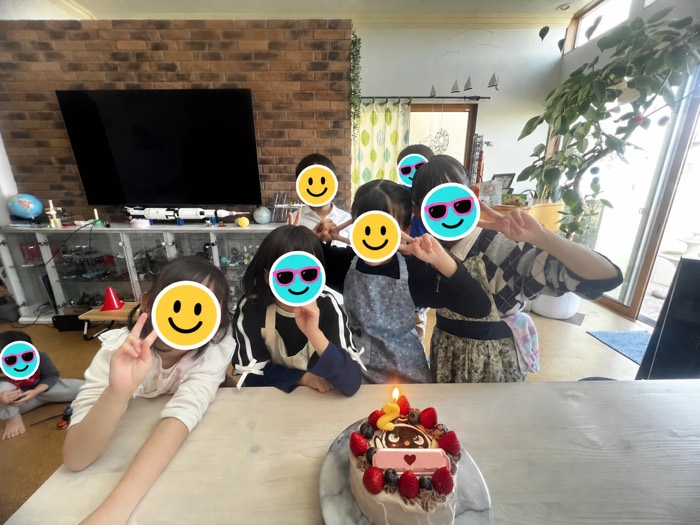
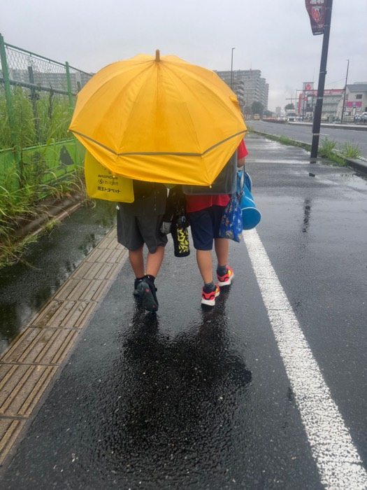
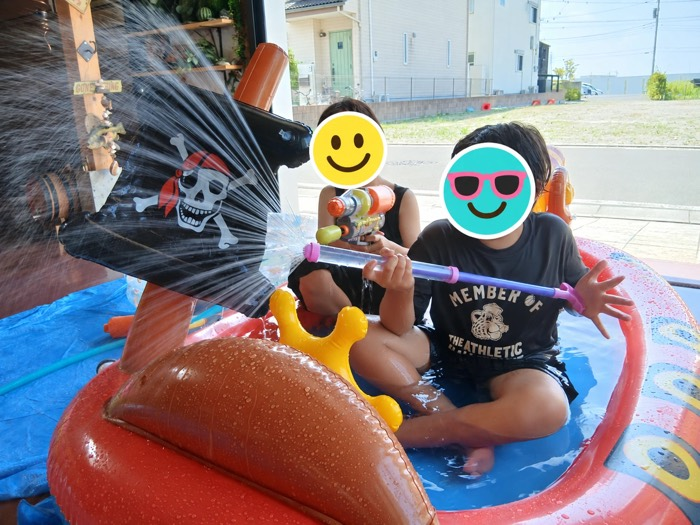
Staffみんな大切なひとり。
- まゆ先生
子どもたち一人ひとりの「やってみたい！」を大切に、楽しく学び、笑顔あふれる時間を一緒に過ごしていきたいと思っています。
- 似顔絵くみこ先生
【ひとこと紹介】
Voices保護者の声
【保護者の方の声が入ります】
【保護者の方の声が入ります】
【保護者の方の声が入ります】
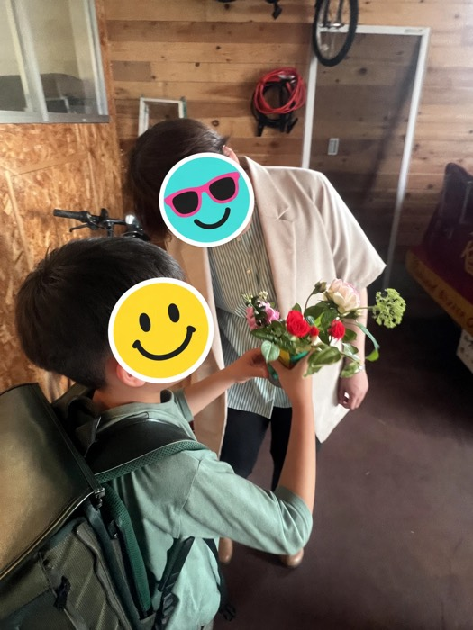
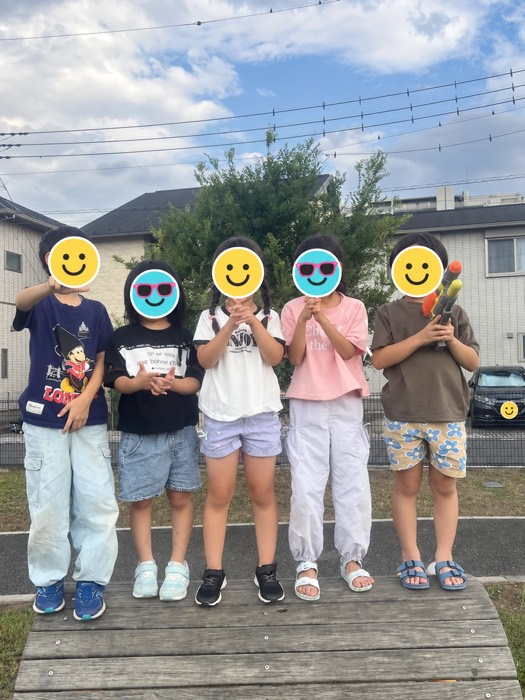
Price料金（税込み）
- 週3回
- 20,000円／月
- 週5回
- 23,000円／月
- 入会金
- 10,000円
- 年間保険料
- 1,000円
- スポット利用
- 1,100円／1時間
夏休みだけのご利用もできます♪
長期休暇やスポット利用などの細かいことは、お問い合わせください。
Accessアクセス・利用時間
- 平日
- 8:30〜19:30
- 学校休業日等
- 8:00〜19:30ご利用の際は事前予約をお願いいたします
- お迎え
- 美園北小学校のみ（1年生〜3年生）授業終了時間から可能です
- 場所
- 〒336-0967
埼玉県さいたま市緑区美園3-6-29
FAQよくある質問
見学はできますか？
できます。公式LINEから、お気軽にお問い合わせください。
お迎えはありますか？
美園北小学校（1年生〜3年生）は、授業終了時間からお迎えに行きます。4年生以上は、6時間授業の日はお迎えではなく、1人または同じ星の子のお友達と星の子に向かいます。
夏休みだけの利用はできますか？
できます。長期休みのみのご利用はご予約制です。
学校休業日は何時からですか？
8:00〜19:30です。ご利用の際は事前予約をお願いいたします。
お休みした日の振替や返金はありますか？
繰り越し・振替制度はございません。体調不良等でお休みの場合も返金致しかねます。万が一感染症の発生等で星の子が閉鎖になった場合は、日割り/月額で返金対応いたします。
学校に行けない日も利用できますか？
不登校など学校へ行けない場合も対応いたします。ご相談ください（別途料金がかかる場合がございます）。
「ここ、ちょっと行ってみたい！」
見学・お問い合わせは、公式LINEから
※公式LINEのボタンのリンク先は要確認
「この世界っておもしろい！」
「生きるって楽しい！」

ここに、
私たちがいる。
Pale Blue Dot
1990.2.14 Voyager 1
この小さな地球で、
たくさんの出会いと体験を。
そして、これからもずっと——
この美しい世界を楽しむために
生まれてきた、すべての人へ。
Kids Club星の子
Kids Club 星の子 を運営する
PALE BLUE DOT